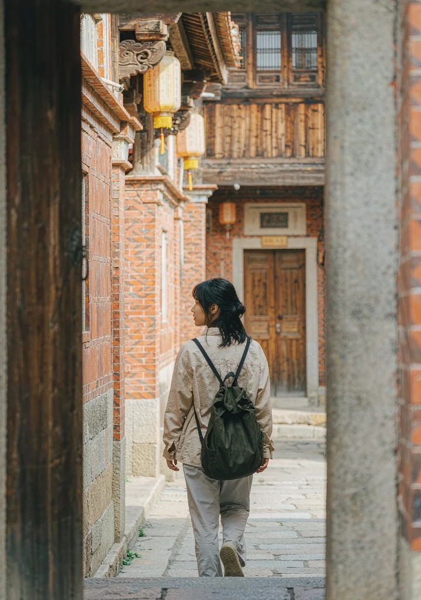
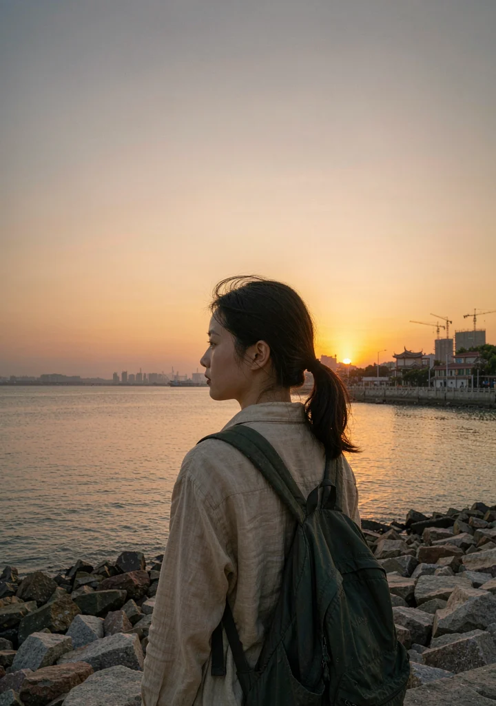
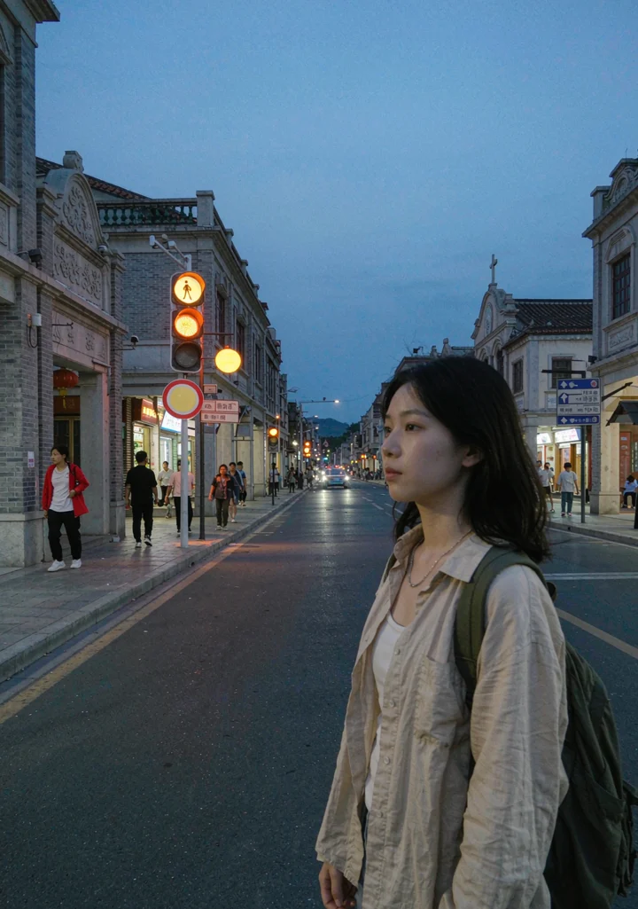

V VivaVideo
YOUR STORY, YOUR CUT
你负责经历，
我们一起把它讲成故事。



38 段素材 → 1 个故事
NEW · AI 原生创作
AI 故事导演
说一句真实感受，AI 帮你组织镜头、旁白与情绪。故事方向由你决定。
素材与真实感受
STEP 01 / 让 AI 先理解你
这段经历，
你最想说什么？
已载入“泉州独行”示例。AI 只根据素材和你的表达组织故事，不虚构经历。
已选 6 段素材共 00:52 · 已过滤 2 段重复素材
✦无需写专业提示词。AI 会先给出 3 种故事结构，你可以选完再生成。
选择故事方向
STEP 02 / 你决定表达，不是选模板
同一个瞬间，
可以有不同的讲法。
基于你的感受与“错过末班车”，AI 建议从情绪转变开始。
我听到的不是一篇泉州攻略，
而是 “从害怕失控，到允许自己慢下来”。
而是 “从害怕失控，到允许自己慢下来”。
V AI 故事导演
故事草稿
从不完美开始 · 9:16
一个人，也可以不赶路
✓ 首版故事草稿已完成
01 / 意外的开场
♫ 轻钢琴 · 松弛 / 82 BPM
00:00 / 00:45
故事分镜点击镜头，只改不满意的部分
镜头 03 · 自由发生未锁定
创作依据可追溯来自素材 04 · 庭院喝茶；对应你选择的“自由”而非景点介绍。
只更新当前镜头的旁白与节奏，其他镜头保持不变。